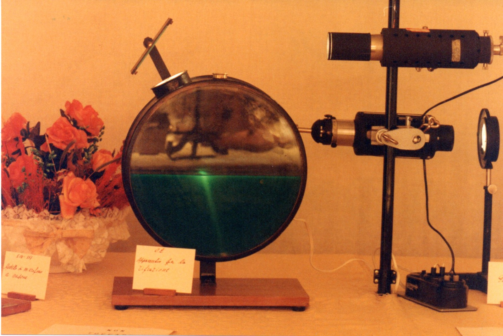

Apparecchio di Tyndall
Scuola di provenienza: Liceo Statale "P. E. Imbriani", Avellino
Settore: Ottica
Costruttori: Sconosciuto
Materiali: Ferro, vetro, specchio, legno di noce, ottone
Accessori: Nessuno
Stato di conservazione: Buono
Descrizione: L’apparecchio serve sostanzialmente per verificare la legge di rifrazione della luce attraverso un liquido trasparente ( legge di Snell). Uno specchio piano esterno invia in una fenditura un raggio di luce che colpisce la superficie libera che dall’ acqua viene rifratta. Per rendere visibile il raggio di luce si colora l’acqua con un fluorescente e si soffia all’interno del fumo.